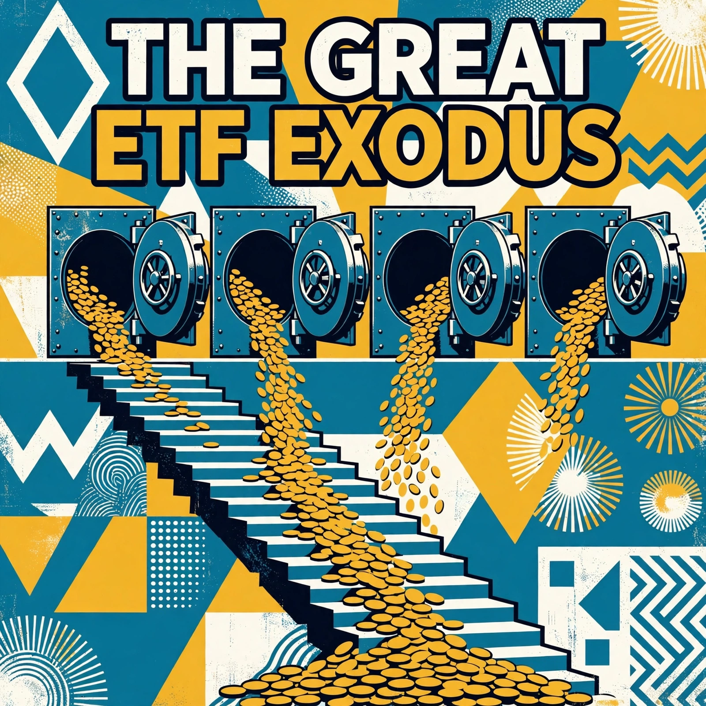

Bitcoin Stories — Wednesday, Nov 25, 2026

Bitcoin fell 2.39% on Tuesday to close near $59,748 — its lowest close since November 20 — and traded near $59,341 early Wednesday, down 7.82% over seven days, with the Crypto Fear & Greed Index at 13, in extreme fear.
Read the full story →
US spot Bitcoin ETFs recorded $231.56M in net outflows on November 24, a sixth straight withdrawal day; November's cumulative outflows now stand at $4.94B, with BlackRock's IBIT alone down $4.17B for the month.
Read the full story →Strategy disclosed in an SEC 8-K filing that it bought 457 BTC for $29.6 million at an average price of $64,898, lifting its holdings to 851,305 BTC even as prices slid.
Read the full story →Bitcoin spiked from $61,100 to $65,000 in 30 minutes after Jensen Huang's reinstatement as Nvidia CEO, then fell 5.17% from the peak — liquidating $375M in shorts, then $140M in longs — as the Fear & Greed Index stayed at 11.
Read the full story →Traders are braced for October PCE inflation (forecast 0.3% monthly) and the second estimate of Q3 GDP, both due at 8:30 AM ET, with Bitcoin under pressure near $59,300 ahead of the releases.
Read the full story →